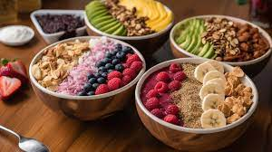

Grow on trees

Several ideas for bowls

You can also make a shake
The origin country is Brazil
Acai market in Brazil
Percentage of extractive production of açaí by Brazilian states
What we need for making an acai bowl

Bitter taste that contains hints of dark chocolate and blackberry